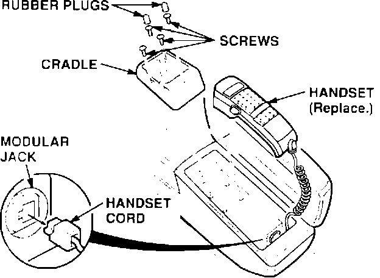
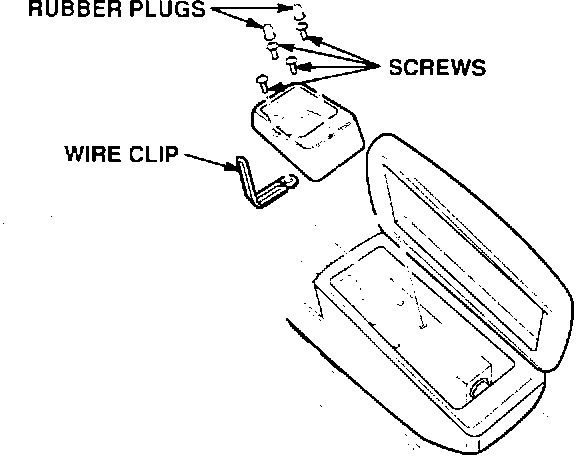
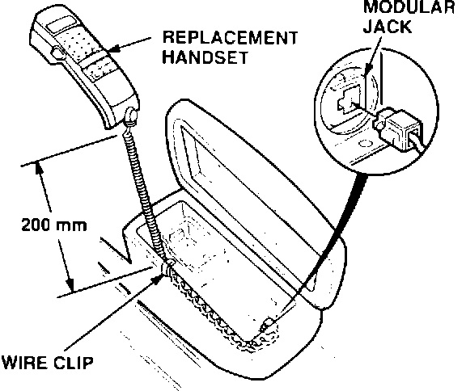

Cellular Phone - Erratic Operation
BULLETIN NO.93-009
YEAR
1991-93
MODEL
LEGEND
VIN APPLICATION
ALL with OPTIONAL
CELLULAR TELEPHONE
April 20, 1993
Cellular Telephone Handset Cord Damaged
SYMPTOM
The cellular telephone has many symptoms, such as not being able to hear during a call, the function buttons not working, or the display not illuminating.
PROBABLE CAUSE
The handset cord has a broken wire at, or near the strain relief grommet.
CORRECTIVE ACTION
Replace the handset with the improved part (see PARTS INFORMATION), and install a wire clip to keep the handset cord from interfering with the console cover.

1. Remove the handset from the cradle, and disconnect the handset cord from the modular jack.
2. Remove the cradle from the console bracket (two rubber plugs, four screws).
3. Locate the clip included in the kit, and bend the clip in the middle to form a 90~ angle.

4. Reinstall the cradle with the bent wire clip under the front mounting screw on the driver's side. Tighten all the screws securely and install the two rubber plugs.

5. Plug the new handset cord into the modular jack. Then, with the cord relaxed (not stretched), measure 200 mm from the handset and bend the clip around the cord to hold it in place.
6. Set the handset in the cradle, then, remove it and bring it to your ear several times. The cord should lie flat and not interfere with the back of the console.
7. Perform a "component check" as described in the Accessory Installation Instruction for the cellular telephone.
PARTS INFORMATION
Handset (with wire clip): P/N 08E01-SP0-200FRM
WARRANTY CLAIM INFORMATION
In warranty:
The normal warranty applies.
Out of warranty:
Any repair performed after warranty expiration may be eligible for goodwill consideration by the District Service Manager. You must request consideration, and get the DSM's decision, before starting work.
Operation number: 051120
Flat rate time: 0.4 hour
Failed P/N: 08E01-SP0-20001
Defect code: 018
Contention code: B01